Ethereum commence à s'envoler et cela ne peut signifier qu'une seule chose. La saison des altcoins arrive. En fait, depuis ma dernière vidéo, plusieurs pépites dont j'ai parlé ont déjà fait x5. Mais soyons honnêtes, ce n'est pas suffisant. Nous visons des gains de x30, x50, voire x100. J'ai donc fait des recherches approfondies, analysé les graphiques, suivi les schémas de rotation, et aujourd'hui je partage avec vous les 10 altcoins qui ont le plus fort potentiel d'exploser littéralement au cours des trois prochains mois. Mais avant de vous montrer la liste, vous devez comprendre pourquoi cela se produit, car une fois que vous l'aurez compris, vous réaliserez que vous êtes encore en avance. Ethereum surperforme désormais Bitcoin. C'est le début de la phase
Interface & Outils : Crypto Bubbles, Réseau social X (Twitter)
Contenu textuel & Code : Graphique de bulles de cryptomonnaies, tableau de classement et de métriques financières, infographie sur les phases du marché des cryptos (Phase 1: Bitcoin, Phase 2: Ethereum, Phase 3: Large Caps, Phase 4: Altseason)
Action / Démonstration : Présentation des performances des altcoins et analyse des différentes phases menant à la saison des altcoins.
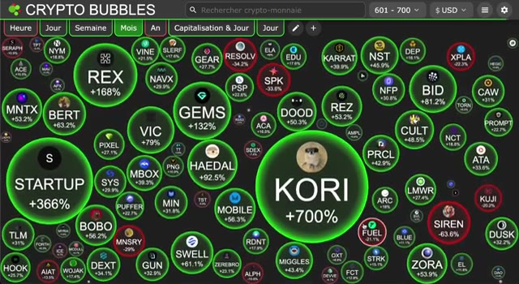
🔍 Agrandir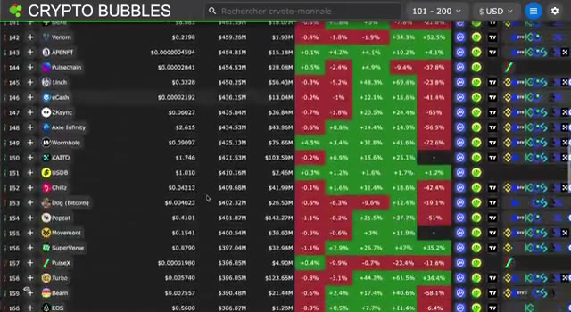
🔍 Agrandir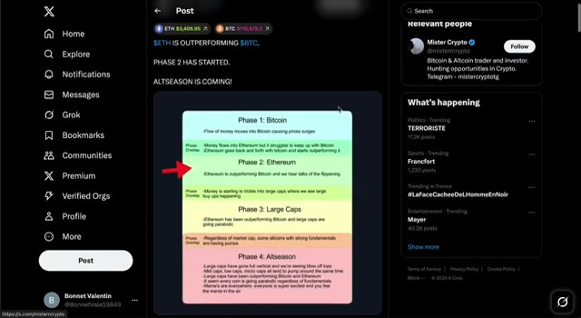
🔍 Agrandirdeux du cycle de marché. C'est le moment où les capitaux sortent du Bitcoin pour aller vers l'Ethereum, puis affluent vers les grandes capitalisations et enfin vers les altcoins. C'est un schéma que nous avons vu maintes et maintes fois. La dominance du Bitcoin est rejetée. La paire ETH BTC est en train de casser sa résistance et le graphique Total 3, qui correspond à la capitalisation boursière de tous les altcoins, hors BTC et ETH, montre une formation de cassure massive. La rotation a commencé. La saison des altcoins n'est plus seulement une possibilité. Elle frappe à la porte. Et au-delà des graphiques, les fondamentaux s'alignent. Des lois sur la crypto sont approuvées. Des nations achètent. Des institutions
Interface & Outils : Réseau social X (Twitter), TradingView (graphique financier).
Contenu textuel & Code : Schéma explicatif des flux de capitaux du cycle crypto en quatre phases (Phase 1 : Bitcoin, Phase 2 : Ethereum, Phase 3 : Large Caps, Phase 4 : Altseason) et graphique de la dominance des altcoins.
Action / Démonstration : Présentation visuelle des différentes étapes de rotation des capitaux du marché crypto au cours d'un cycle haussier.
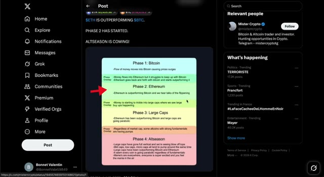
🔍 Agrandir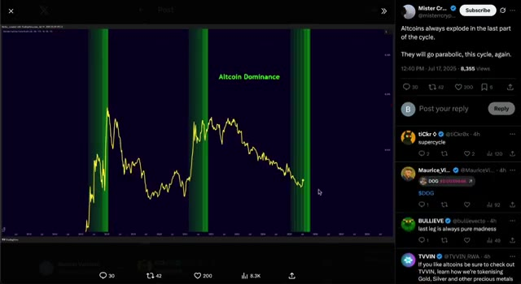
🔍 Agrandirfont le plein d'Ethereum. Et une liquidité massive est sur le point de basculer dans le marché des altcoins. Je crois que la capitalisation boursière totale des cryptomonnaies, hors Bitcoin et Ethereum, le total 3, se dirige vers les 3 billions de dollars pour ce cycle. Mais pour capturer ces gains, vous avez besoin des bonnes cryptos. C'est pourquoi j'ai fait mes devoirs. Il ne s'agit pas juste d'une autre liste aléatoire d'altcoins.
Interface & Outils : Site web Cointelegraph et interface de la plateforme X (Twitter) affichant un graphique TradingView.
Contenu textuel & Code : Articles d'actualité crypto sur Cointelegraph, et graphique technique TOTAL3 avec l'annotation « $TOTAL3 Breakout Incoming » et une flèche verte de projection haussière.
Action / Démonstration : Illustration visuelle des flux institutionnels vers Ethereum via un article d'actualité, puis analyse technique haussière du TOTAL3 sur un graphique TradingView publié sur X.
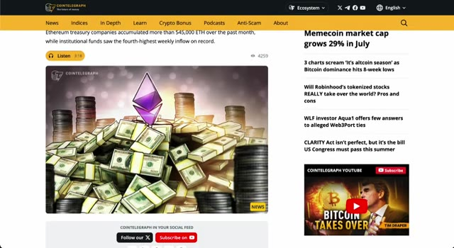
🔍 Agrandir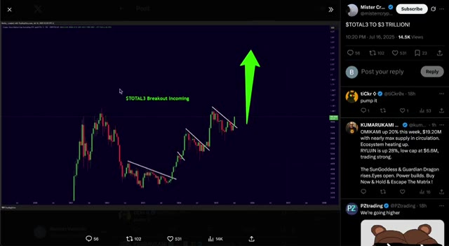
🔍 AgrandirCe sont des pépites à forte conviction, profondément étudiées, le genre qui ne font pas seulement x3, mais x10, x30, ou même x100. Entrons dans le vif du sujet. Pepe. Commençons par Pepe. C'est le roi des memecoins, sauvage, viral, et soutenu par l'une des communautés les plus fortes de la crypto. Le hype est toujours bien vivant, et même après des gains massifs, il tient bon. Pas besoin d'un énorme pactole, avoir juste un peu d'exposition à Pepe pourrait s'avérer très rentable pendant la saison des altcoins. C'est bon marché, ça bouge vite, et c'est parfait pour le FOMO des particuliers. Cette pièce pourrait facilement faire un autre x10 à partir d'ici si la dynamique se met en place.
Interface & Outils : Crypto Bubbles et CoinGecko
Contenu textuel & Code : Bubbles de performance des cryptos (AIOZ, ETH, ONDO, PEPE, ENA) et données de marché de Pepe (Market Cap, Supply, graphique de prix historique).
Action / Démonstration : Présentation visuelle des performances du marché et analyse des métriques fondamentales et du graphique de Pepe.
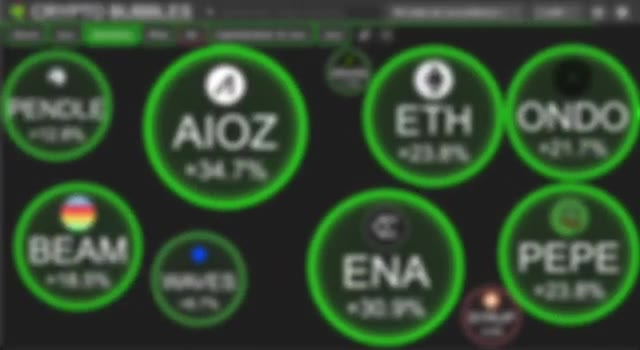
🔍 Agrandir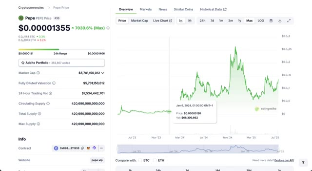
🔍 AgrandirMaintenant, en regardant le graphique, nous voyons une forte tendance haussière, des niveaux de support nets et des cassures de consolidation. Il respecte parfaitement sa fourchette et le volume s'accumule à nouveau. S'il franchit la prochaine zone de résistance, il pourrait vraiment décoller. C'est une structure de memecoin classique, faible résistance, gros potentiel de hausse. Au fait, si vous cherchez à gagner de l'argent réel pendant cette saison des altcoins, je vous recommande vivement de trader ces cryptos sur Weeks, tout comme je le fais. Utilisez mon lien exclusif ci-dessous pour réclamer jusqu'à 30 000 $ de bonus sur dépôt, une boîte mystère de 100 000 $ et d'énormes réductions sur les frais de trading.
Interface & Outils : Échange de cryptomonnaies WEEX / Interface de trading en ligne.
Contenu textuel & Code : Graphique en chandeliers 1D de la cryptomonnaie 1000PEPE/USDT, volume, carnet d'ordres (Order Book) en temps réel, panneau de passage d'ordres (Limit, Market, Trigger order) avec effet de levier 20x.
Action / Démonstration : Analyse technique du cours de la cryptomonnaie et présentation des fonctionnalités de trading sur la plateforme.
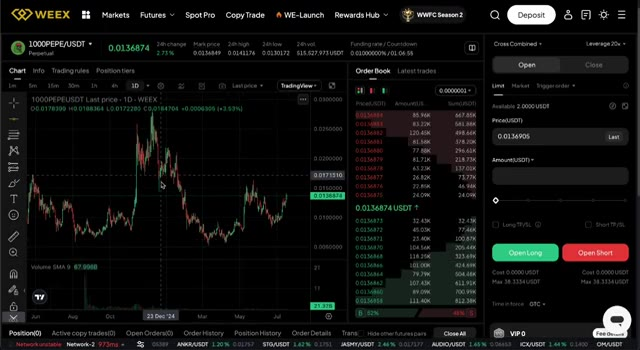
🔍 AgrandirSeulement disponible via mon lien. Ne le manquez pas si vous êtes sérieux au sujet de faire du profit sur ce marché. Ondo. Ondo est l'un des paris sur les actifs du monde réel les plus solides dans la crypto en ce moment. Pendant que tout le monde est concentré sur ETH, les gros joueurs comme BlackRock soutiennent également Ondo dans les coulisses. Cela amène les obligations et les rendements du Trésor directement sur la chaîne, et c'est énorme. À mesure que la réglementation rattrape son retard, Ondo est parfaitement positionné pour en bénéficier. Ce n'est pas un point de battage médiatique. C'est de la DeFi au niveau de l'infrastructure. Quand la rotation commencera des cryptos majeures vers les fondamentaux sérieux, Ondo pourrait être l'un des plus grands gagnants. Du point de vue du graphique, Ondo construit une structure haussière solide. Après avoir cassé des niveaux clés
Interface & Outils : Présentation ou face-caméra explicatif du trader sans interface logicielle partagée.
Contenu textuel & Code : Explications orales des stratégies et mise en contexte méthodologique du marché.
Action / Démonstration : Explications face caméra et analyse conceptuelle des marchés.
zones de résistance, nous sommes de nouveau en phase d'accumulation. Le prix se resserre et une cassure pourrait l'envoyer vers 2 dollars ou plus. Il a ce schéma de progression régulière. Ce n'est pas voyant, mais c'est très fiable. ENA. ENA est le jeton de gouvernance d'Athena, un protocole qui construit des dollars synthétiques, l'USDE, en utilisant des stratégies neutres par rapport au delta. C'est l'une des alternatives aux stablecoins les plus intéressantes qui soient.
Interface & Outils : Interface de l'exchange WEEX et page web CoinGecko.
Contenu textuel & Code : Graphique de prix journalier ONDO/USDT avec volumes (Volume SMA 9), carnet d'ordres, et fiche d'information CoinGecko pour Ethena (ENA) affichant un prix de 0,3825 $, une capitalisation de 2,41 milliards de dollars et une TVL de 5,33 milliards.
Action / Démonstration : Présentation des graphiques de prix et des données de marché des cryptomonnaies ONDO et ENA pour illustrer l'analyse technique et fondamentale.
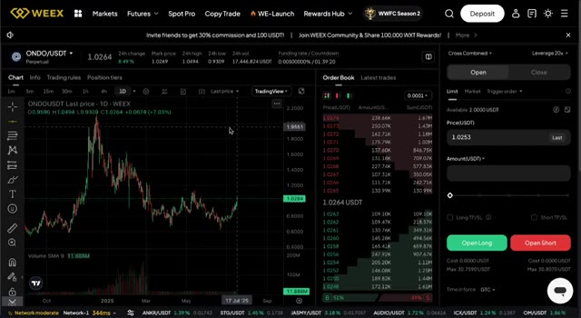
🔍 Agrandir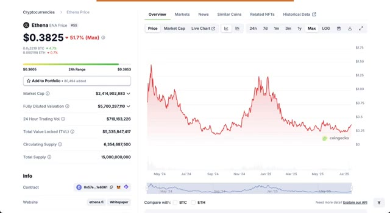
🔍 AgrandirLes rendements sont générés par de véritables mécanismes de la DeFi, et non par de l'inflation artificielle. En ce moment, E&A passe encore sous le radar, mais avec ce genre de modèle et de traction, le token pourrait facilement faire x5 ou x10 à mesure que la demande de revenus stables augmente. Sur le graphique, E&A a rebondi depuis ses plus bas et a formé une base solide. Nous observons un schéma de retournement potentiel avec des creux plus hauts et un volume qui commence à augmenter.
Interface & Outils : CoinGecko et la plateforme d'échange WEEX (interface de trading spot/futures avec graphique TradingView intégré).
Contenu textuel & Code : Prix du token ENA (0,3825 $ puis 0,3758 $), capitalisation boursière (2,41 milliards de dollars), volume sur 24h, TVL (5,33 milliards de dollars), graphiques de prix historiques et carnet d'ordres en temps réel.
Action / Démonstration : Analyse de la valorisation fondamentale du token Ethena sur CoinGecko suivie d'une observation de son graphique de prix et de sa liquidité sur l'exchange WEEX.
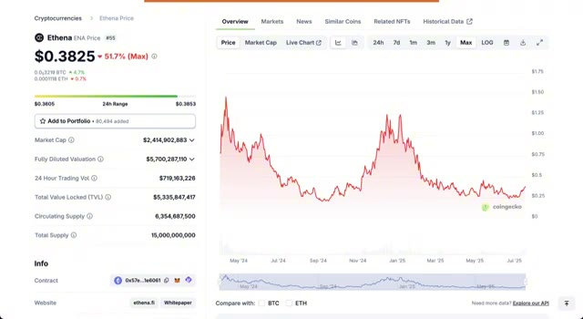
🔍 Agrandir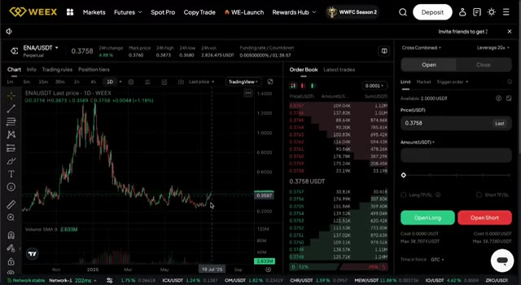
🔍 AgrandirS'il dépasse la résistance, la dynamique pourrait vraiment s'enclencher. Pendle. Maintenant, plongeons dans les opportunités vraiment juteuses, les altcoins à faible capitalisation avec le plus grand potentiel de hausse. Ce sont ceux qui pourraient offrir des gains fous de 30x, voire 50x, si cette saison des altcoins démarre comme nous l'attendons. Pendle vous permet de tokeniser et d'échanger du rendement. Pensez-y. Vous pouvez littéralement acheter et vendre des rendements futurs. C'est comme le trading d'obligations de Wall Street, mais dans la DeFi. C'est une avancée énorme et personne ne le fait mieux que Pendle.
Interface & Outils : Présentation ou face-caméra explicatif du trader sans interface logicielle partagée.
Contenu textuel & Code : Explications orales des stratégies et mise en contexte méthodologique du marché.
Action / Démonstration : Explications face caméra et analyse conceptuelle des marchés.
Institutions are paying attention and as yield farming comes back into play, this could be a I really think this one could do a solid 10 to 20x. Pendle has been in a strong uptrend for months. Even during dips, it holds key support. Right now, it's consolidating under a major resistance. A breakout here could send it flying again. The setup looks clean and bullish.
Interface & Outils : CoinGecko et WEEX (échange de crypto-monnaies).
Contenu textuel & Code : Prix de Pendle à 4,23 $, capitalisation boursière, volume de transactions sur 24 heures, graphique historique max, graphique en chandeliers 1D sur WEEX avec indicateur de volume, carnet d'ordres et options de levier.
Action / Démonstration : Analyse fondamentale de l'actif Pendle suivie d'une analyse technique du graphique journalier et consultation du carnet d'ordres.
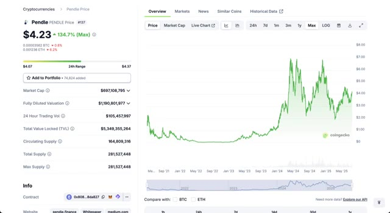
🔍 Agrandir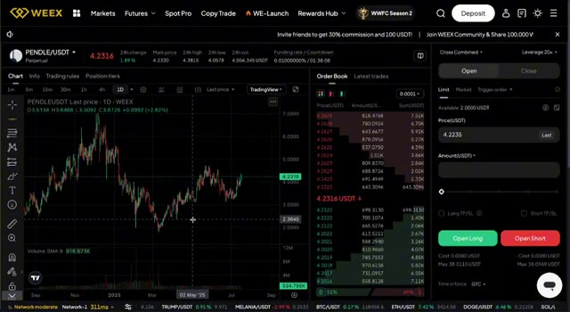
🔍 AgrandirPetite note, aucun de ces projets ne m'a sponsorisé. Ce sont 100 % mes propres choix basés sur des années d'expérience en trading et en recherche sur la crypto à temps plein. Je vais toujours rester authentique et honnête avec vous. Si vous appréciez cela, assurez-vous de cliquer sur le bouton S'abonner. Ça aide vraiment. Syrup. Syrup est un nouvel altcoin avec une faible capitalisation boursière et un fort potentiel de hausse. Il construit des incitations DeFi durables et développe une communauté soudée. Pas beaucoup de gens en parlent encore, mais c'est exactement le genre de token qui peut exploser aléatoirement par 50 lorsque la vague de battage médiatique frappe. Risque élevé, récompense élevée, mais s'il tient ne serait-ce que la moitié de ses promesses, le potentiel de hausse est fou. Syrup se trouve dans une phase d'accumulation
Interface & Outils : Crypto Bubbles et CoinGecko.
Contenu textuel & Code : Variations en pourcentage des cryptos (AIOZ, ONDO, ENA, PENDLE, etc.) et données financières de Maple Finance / SYRUP (Market Cap de 478M$, TVL de 1.88B$, prix à 0.4467$).
Action / Démonstration : Présentation de performances de cryptomonnaies et analyse fondamentale d'un jeton (Maple Finance).
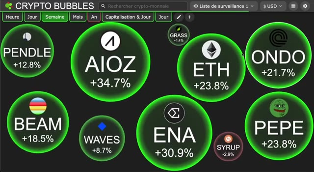
🔍 Agrandir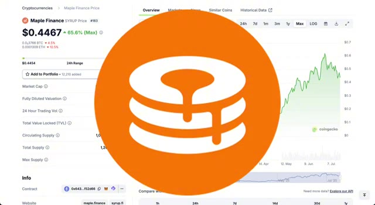
🔍 Agrandir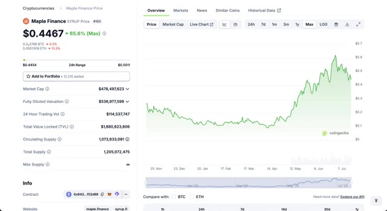
🔍 Agrandiren ce moment. Il est à un plancher avec très peu de résistance au-dessus. Une petite hausse pourrait le propulser en découverte de prix. C'est l'une de ces configurations furtives où les entrées hâtives comptent. AIOZ. AIOZ concerne la décentralisation de la diffusion de contenu. YouTube, Netflix, Twitch, mais sur la chaîne. C'est une infrastructure réelle et elle est déjà en ligne. La technologie fonctionne, la demande est réelle, et à mesure que de plus en plus de créateurs s'impliqueront, la valeur du jeton pourrait monter en flèche. C'est le Web 3 qui rencontre le Web 2 et cela ne fait que commencer. AIOZ forme un fanion haussier classique. Le volume est en baisse,
Interface & Outils : WEEX (bourse de dérivés crypto) et CoinGecko (agrégateur de données de marché).
Contenu textuel & Code : Graphiques en chandeliers, carnets d'ordres (Order Book), prix actuels ($0.4468 pour SYRUP et $0.4153 pour AIOZ), volumes de transactions sur 24h et capitalisations boursières.
Action / Démonstration : Présentation des configurations graphiques et analyse technique des altcoins SYRUP et AIOZ.
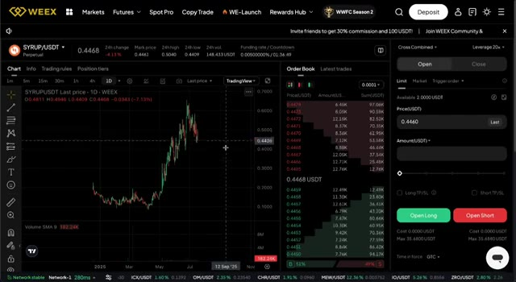
🔍 Agrandir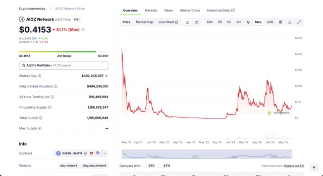
🔍 Agrandirce qui est ce que vous voulez avant une cassure. S'il franchit la ligne de tendance supérieure, cela peut facilement doubler ou tripler en quelques jours. Beam. Beam se concentre sur la confidentialité. Avec toute l'attention portée sur la surveillance et le suivi sur la chaîne, les transactions privées deviennent plus précieuses que jamais. Beam a été un pionnier dans ce domaine et continue d'innover. Si la confidentialité redevient un sujet brûlant, et ce sera le cas, Beam pourrait connaître une envolée parabolique. Beam est actuellement très comprimé. Il tient le support comme un roc et un mouvement au-dessus de la résistance pourrait déclencher une cassure sérieuse. Il ne fait pas grand-chose pour l'instant, ce qui est le moment idéal pour le surveiller. Et avant de passer aux vraies grosses pépites à la fin de la liste, n'oubliez pas de vous inscrire
Interface & Outils : CoinGecko et la plateforme d'échange WEEX (interface de trading spot/futures avec graphique TradingView et carnet d'ordres).
Contenu textuel & Code : Graphiques de prix historiques de Beam, capitalisation boursière (391 millions de dollars), volume sur 24h, prix actuel (0.007565 USDT) et indicateur Volume SMA 9.
Action / Démonstration : Analyse du graphique de prix journalier de BEAMX et visualisation des données de marché sur CoinGecko et WEEX.
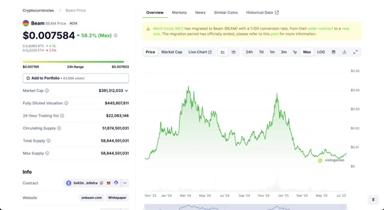
🔍 Agrandir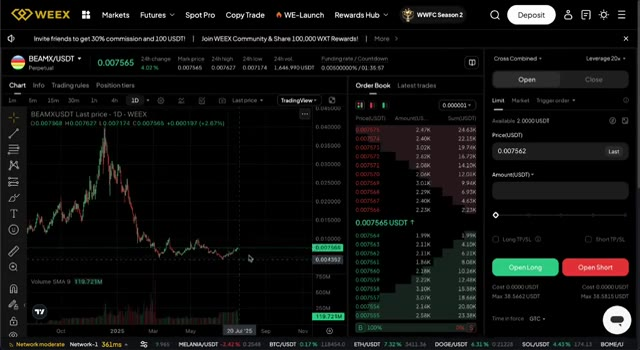
🔍 Agrandirjusqu'à Weeks en utilisant le lien ci-dessous pour réclamer vos bonus. C'est là que se fait le gros argent, en négociant ces altcoins avec effet de levier pendant que le marché s'échauffe. Grass. Grass joue la carte de la durabilité dans la crypto. Technologie verte, faibles émissions et dApps évolutives. Il se construit sur le long terme. Ce genre de projet pourrait attirer des capitaux soucieux de l'environnement, en particulier si les récits ESG font leur retour. En ce moment, il est encore sous le radar, mais il s'intègre parfaitement dans l'avenir de la blockchain propre. Le graphique ressemble à une configuration classique de pré-hausse. Il a été plat, le volume est bas, et cela signifie généralement une seule chose. Quelque chose de gros se prépare. Cela pourrait basculer rapidement.
Interface & Outils : Navigateur web affichant la plateforme CoinGecko.
Contenu textuel & Code : Prix du jeton Grass à 1,16 $, capitalisation boursière de 341 millions de dollars, volume sur 24h et graphique d'évolution maximale.
Action / Démonstration : Présentation des données fondamentales et du graphique de prix du token Grass.
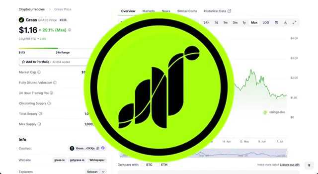
🔍 Agrandir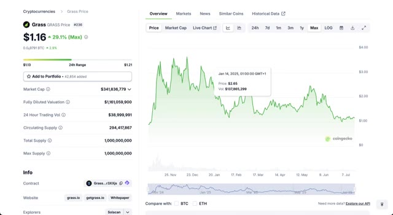
🔍 AgrandirVagues. Vagues est un vétéran dans ce domaine. Une blockchain de niveau 1 avec son propre écosystème. C'est calme depuis un moment, mais des jetons comme celui-ci ont tendance à exploser de nulle part. Risque élevé, oui, mais aussi fort potentiel. Si l'attention se tourne vers les anciens L1, Waves pourrait connaître une seconde vie. Waves semble volatil, mais il teste la même zone encore et encore. S'il franchit ce seuil, nous pourrions voir un x2 ou plus très rapidement. Ce n'est vraiment pas une pièce à négliger pendant la saison des altcoins.
Interface & Outils : CoinGecko et WEEX (plateforme d'échange de crypto-monnaies).
Contenu textuel & Code : Graphique de prix historique, capitalisation boursière (110 342 152 $), volume d'échange sur 24h, graphique en chandeliers japonais WAVES/USDT avec indicateur de volume (SMA 9) et carnet d'ordres en temps réel.
Action / Démonstration : Présentation des données fondamentales et techniques du token Waves sur différentes plateformes pour illustrer son potentiel d'investissement.
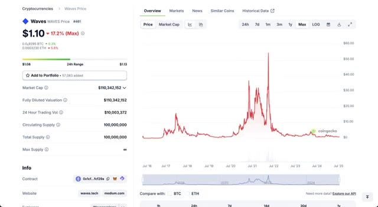
🔍 Agrandir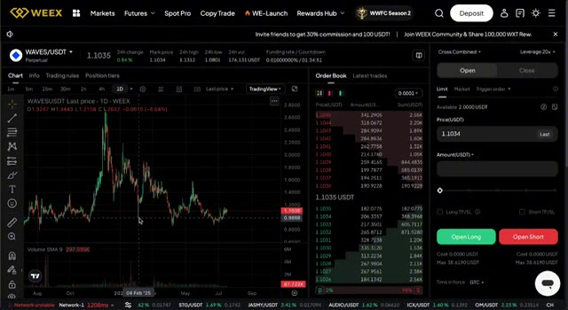
🔍 AgrandirJe détiens ces altcoins pour les prochains mois parce que je crois sincèrement qu'ils peuvent offrir des rendements massifs. Que vous les fassiez trader ou que vous les conserviez à long terme, le potentiel est Assurez-vous de consulter tous les liens ci-dessous, laissez un pouce bleu, abonnez-vous et regardez cette prochaine vidéo juste ici. Croyez-moi, vous ne voulez pas la manquer.
Interface & Outils : Application Web Crypto Bubbles (outil de visualisation des performances des cryptomonnaies).
Contenu textuel & Code : Bulles interactives affichant les tickers et les variations en pourcentage des altcoins (AIOZ, PENDLE, ETH, ONDO, BEAM, WAVES, ENA, PEPE, GRASS, SYRUP) sur une période hebdomadaire.
Action / Démonstration : Présentation visuelle et analyse d'un portefeuille d'altcoins performants sur la plateforme Crypto Bubbles pour illustrer le potentiel de rendement élevé évoqué.
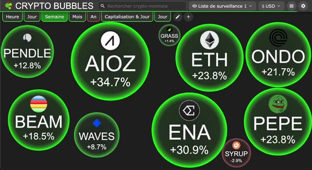
🔍 Agrandir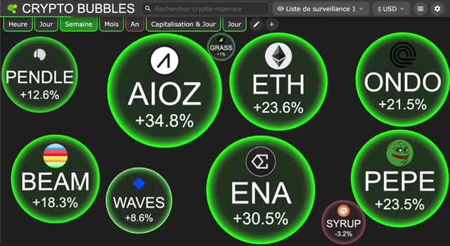
🔍 Agrandir